Tag Elements
The Tag Settings dialog allows you to define how elements will be tagged. Tags can be placed individually by single or multiple selection or by views. Predefined Tag Settings contain information such as Family, location, and leader placement. Groups can be created that contain multiple Tag Settings that can be selected to filter and display specific Tag Settings. Intuitive tagging allows elements to be tagged based on default Tag Settings.
Ribbon commands:
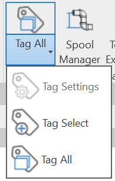
- Tag Settings Loads Settings Manager
- Tag Select - Main model elements can be selected based on default Tag Settings
- Tag Select Link Elements - Linked model elements can be selected based on default Tag Settings
- Tag All - Tags elements in selected views based on Tag Settings defaults
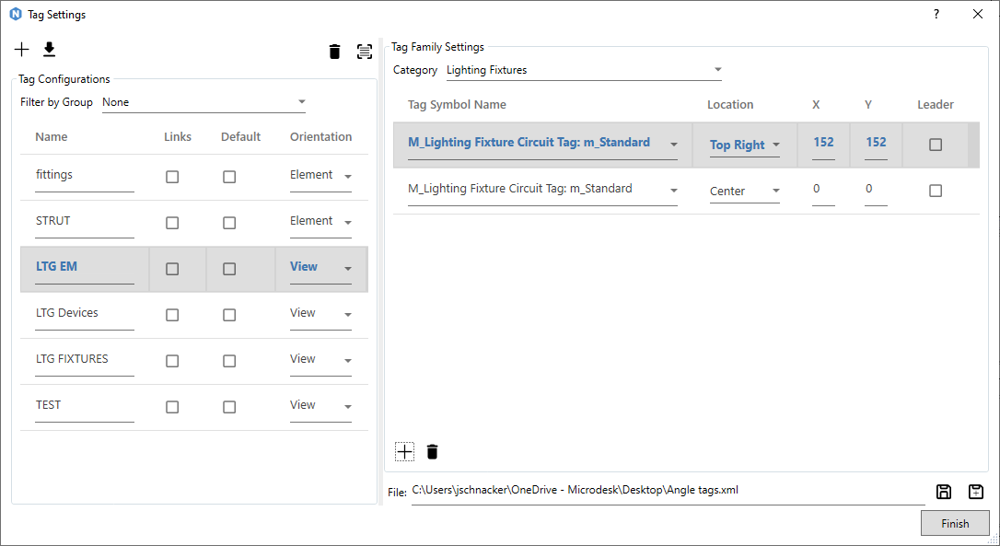
- Tag Settings
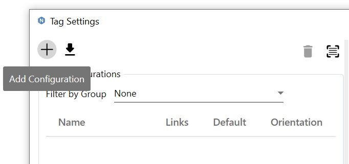
- New Tagging Configurations are are created using the "Add Configuration" button.
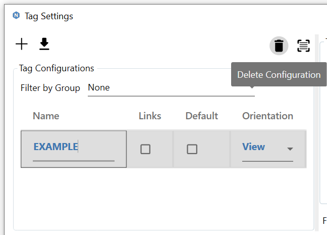
- Delete an existing Tagging Configuration select desired configuration and select the "Delete" button
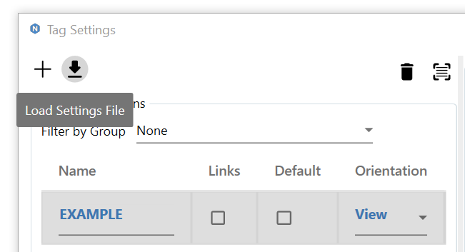
- Loads an existing tag settings file (*.xml)
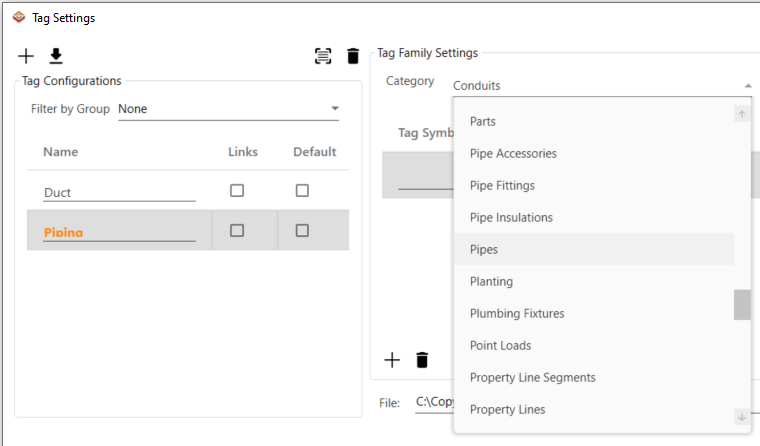
- When a new New Tag Configuration is created a Category must be selected:
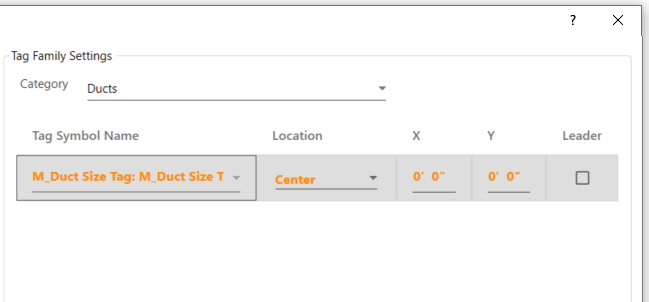
- Tag Symbol Name - Family Symbol Name
- Location - Placement justification of tag
- X - Horizontal location offset from selected location
- Y - Vertical location offset from selected location
- Leader - Use leaders on tag
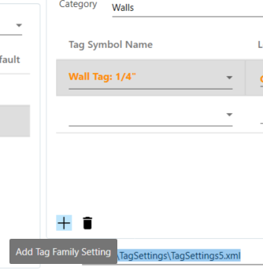
- Additional Tag Family info can be added / deleted
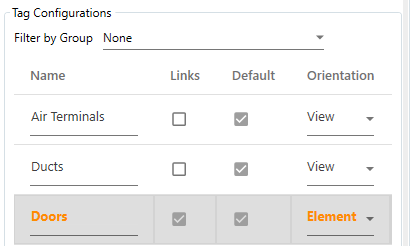
- Links - Selected Tag Elements will be on a Revit linked model
- Default - Tag Setting will be used for intuitive tagging (See Intuitive Tagging Section)
- Orientation - Tag can be placed by View or Orientation to elements
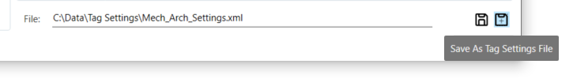
- Save Tag Settings file - Save existing Tag Settings file.
- Save As Tag Settings File - Save file to new location.
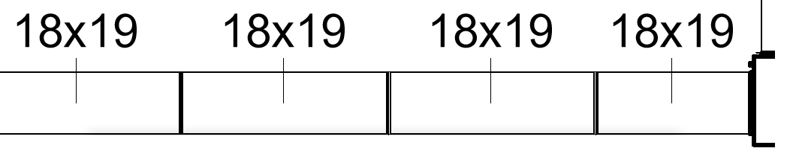
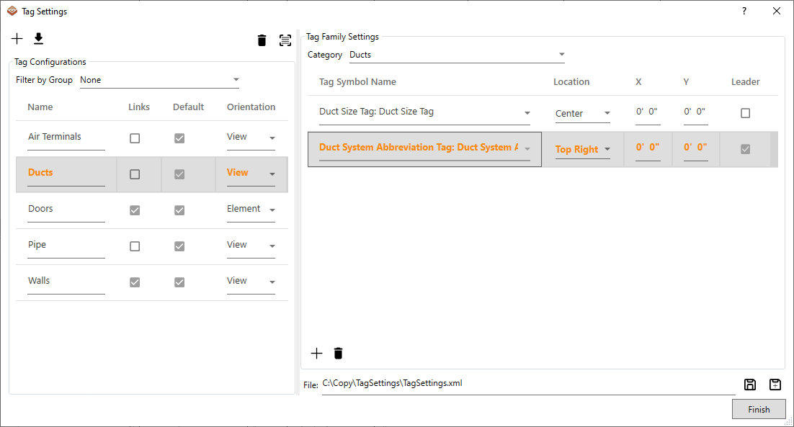
- Once saved the elements may be tagged. With the Tag Select settings specified as desired, leave this dialog open and click on an element for the selected category.
- Only the selected Save Tagging Configuration elements can be tagged. (See Tag Select command for intuitive tagging)
- A selection window may also be used to tag multiple elements at a time.
- Modify settings on the fly to any value throughout workflow:
- Adjust the Location, Leader, X, and/or Y settings for the desired results
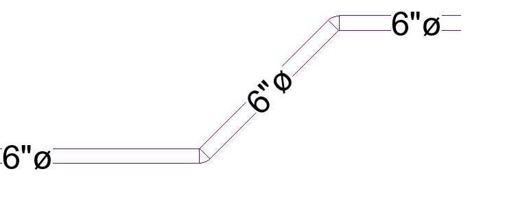
- For linear elements such as duct, pipe, and conduit the tags will rotate to the correct angular orientation of the selected elements.
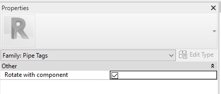
- For tags to align with the angular rotation of the element the Family must have the "Rotate with Component" property set in the Revit Family Editor.
Created with the Personal Edition of HelpNDoc: Add an Extra Layer of Security to Your PDFs with Encryption